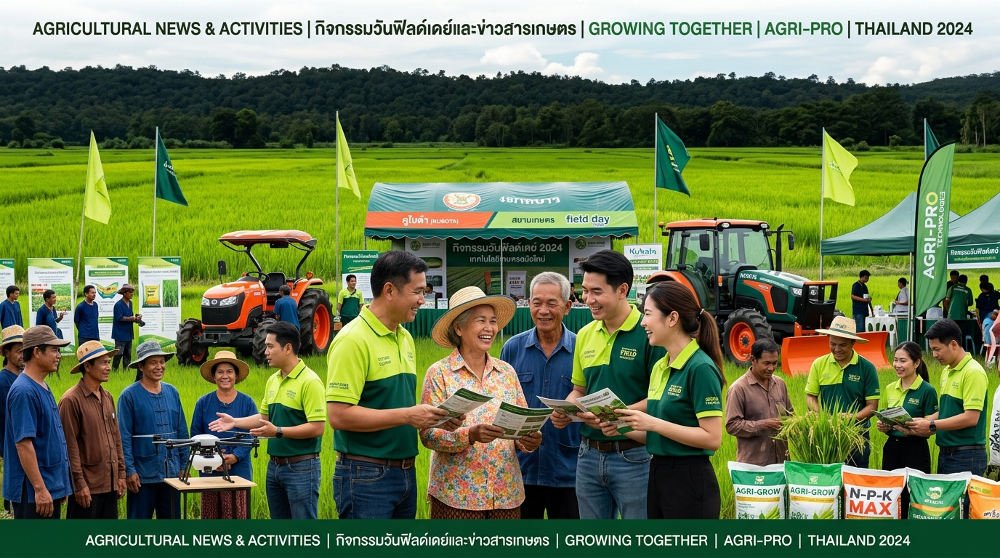

หัวข้อข่าว
เนื้อหาข่าวฉบับเต็ม
ติดตามทุกความเคลื่อนไหว กิจกรรมเพื่อพี่น้องเกษตรกร โปรโมชั่นพิเศษ และบทความสาระเกษตรสมัยใหม่

ข่าวล่าสุดยกระดับความเร็วในการจัดส่งปุ๋ยเคมี ปุ๋ยอินทรีย์ และชีวภัณฑ์เกษตรสู่มือเกษตรกรและร้านค้าตัวแทน ทันต่อทุกช่วงเวลาการเพาะปลูก ด้วยระบบคลังดิจิทัลมาตรฐานสากล